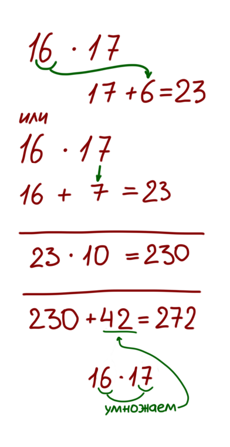
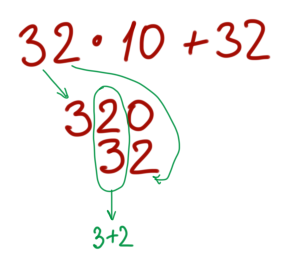
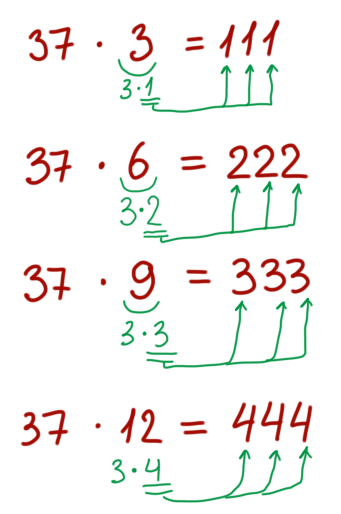

Начнем с самого простого: умножение на однозначное число. Например, 86*7. 80 умножаем на 7, получаем 560; 6 умножаем на 7, получаем 42; складываем, получаем финальный ответ 602.
Чтобы это было легче выполнить в уме, можно отбрасывать нули: учитываем, что 560 - это 56 десятков, а 42 - это 4 десятка и две единицы. В уме представляем себе столбик, в котором четверка числа 42 записана под шестреркой числа 56.
То же самое и для больших чисел, сотни пишем под сотнями, десятки под десятками, нули отрубаем. Почему-то это ускоряет процесс; ячейки памяти, что ли, освобождаются?
На двух последних примерах можно посмотреть, как правильно начинать произносить ответ.
1048*6 → 1000*6=6000 видно, что количество разрядов в ответе будет таким же, порядок числа не увеличится, можно начинать произносить "шесть тысяч..." и считать дальше.
7804*8 → здесь порядок числа увеличится, так что делаем следующее:
Сначала умножаем 78 на 8 и начинаем произносить ответ, помня про увеличение порядка (то есть надо произносить не "шесть тысяч двести...", а "шестьдесят две тысячи...").
Четверка - промежуточный результат, в общем случае ее пока не произносим. Именно в этом примере дальше умножение на ноль, так что здесь можно уже сказать "...четыреста...". Затем останется только посчитать единицы (8*4) и закончить произносить ответ: "...тридцать два."
Этот способ подходит для чисел, которые чуть больше (или меньше) десяти, двадцати, ста, тысячи... - в общем, чисел, на которые легко умножать.
Возьмем пример 16*17, базовым числом назначим 10.
Теперь возьмем слагаемые, выделенные зеленым, и вынесем 10 за скобку:
Так что в уме делаем следующее: берем хвост одного из чисел и прибавляем ко второму (16+7 или 17+6), получаем 23. Умножаем на базовое число 10, получаем 230. Перемножаем хвосты обоих чисел (6*7=42) и складываем это с предыдущим результатом (230+42=272)
Возьмем еще один пример: 105*109, здесь базовое число будет 100
Теперь посмотрим, что будет, если одно из чисел меньше базового, например, 18*23 (базовое число 20).
Обратим внимание, где сложение заменилось вычитанием
Здесь произведение хвостов вычитается из предыдущего результата; так же на первом шаге мы можем выбрать: либо прибавить к восемнадцати тройку, которая перевалила за базу в числе 23, либо вычесть два из двадцати трех (их не хватает до базы у числа 18)
Отличный универсальный способ: умножение крестом, подходит для любых чисел
Возьмем пример 47*62, распришем его как (40+7)*(60+2) и раскроем скобки.
Получим 24 сотни (40*60) плюс 50 десятков (7*60+2*40) плюс 14 единиц
Заметим, как мы получили количество десятков: из числа 47 берем старший разряд (голову) и умножаем на младший разряд (хвост) числа 62 (4*2=8); затем наоборот: берем хвост числа 47, умножаем на голову числа 62 (7*6=42); затем складываем оба результата, получаем 50 (тут становится понятно, почему способ называется "крест")
Чтобы легко посчитать это в уме, вспомним, как мы отбрасывали от столбика нули и записывали разряд под разрядом:
Теперь можно вернуться к примеру и посчитать всё целиком: сперва вычисляем десятки (голова первого числа умножить на хвост второго плюс хвост первого на голову второго):
Получили промежуточный результат 50. Затем перемножаем хвосты, получаем 14, записываем так, чтобы единица от 14 находилась под нулем от 50. Затем перемножаем головы, получаем 24, записываем хвост от 24 под головой от 50. Затем все складываем, получаем финальный ответ 2914
Возьмем пример посложнее: 87*98. Мы получим 127 десятков (7*9+8*8), тут надо быть внимательнее, чтобы не перепутать, что с чем дальше складывать.
Перемножаем хвосты (7*8=56) и видим, что у нас получилось 56 единиц (5 десятков и шесть единиц). Итак, пять десятков и сто двадцать семь десятков: пятерку записываем под семеркой.
Теперь перемножим головы, получим 72 сотни (7200). У нас есть 127 десятков, это 1270. Теперь видно, как надо совместить разряды:
Здесь, наверно, лучше вначале письменно порешать, чтобы потренироваться, потом вся это запись "разряд под разрядом" автоматически пойдет, тогда можно в уме считать.
Этим способом можно и трехзначные числа перемножать
Или можно то же самое в строку записать
Некоторые числа легко перемножаются при помощи очень простых трюков. Трюк для умножения на 11: складываем голову и хвост и запихиваем эту сумму в центр.
Легко увидеть, как получается этот трюк, если расписать 32*11=32*10+32
Ну и всякие другие самые простые трюки (их, наверно, все применяют, но для полноты картины напишу):
Чтобы умножить на 5, надо умножить на 10 и взять половину;
Чтобы умножить на 25, можно умножить на 100 и разделить на 4;
Чтобы умножить на 4, надо удвоить и еще раз удвоить;
Деление на 25 - анимационный приемчик (перевод кадров в секунды): допустим, сцена длиной 332 кадра, сколько в ней секунд? В каждой сотне 4 раза по 25, то есть в трех сотнях 12 секунд; оставшиеся 32 кадра - это секунда с небольшим; получился результат: в этой сцене 13 секунд и 7 кадров. То есть просто берем голову от количества кадров, умножаем на четыре, а затем считаем остаток.
Произведение 37 и числа, кратного трем:
